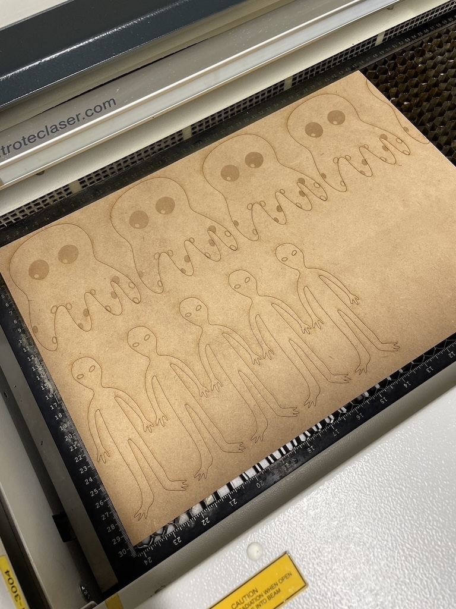
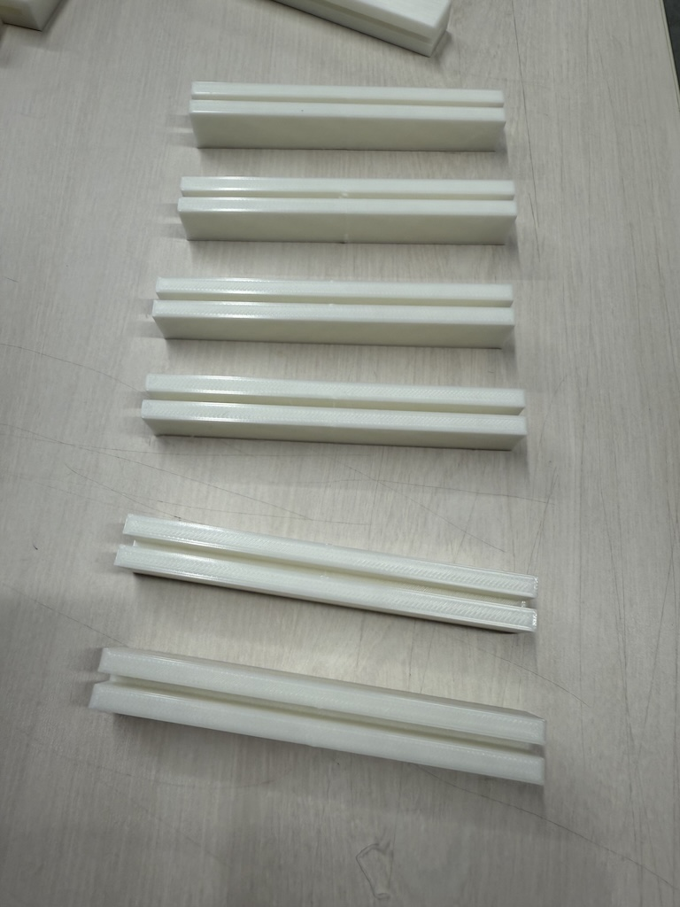
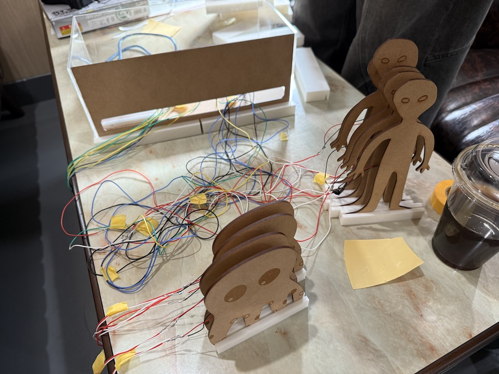

Project Note
Project Note
イメージ

 概要
概要：エアガンでの射撃とダーツを組み合わせたゲームを作る。
ダーツのボードに衝撃を感知するセンサーを取り付け、ディスプレイに表示したい。
あわせて、QRコードを読み取ると点数を確認できる仕組みを作りたい。
プロセスメモ
■は考えないといけないこと、疑問等
●は具体的にやること
→はやったこと
■衝撃の感知方法
■本物のダーツってどんな仕組みなの？
→調べると難しい計算式で場所を特定してるみたい
●簡略化した衝撃感知の方法を考える
→考えた結果が以下の通り
オレンジの断面のように得点を区切り過ぎてしまうとセンサーでの感知が難しくなってしまう。
そこで、縦線での区切りをなくし、円形で得点を区切ることにした。やまさんナイスアイディア。
今回は圧力センサーを使って製作する。
とりあえず繋いでみる
●圧力センサー1つをarduinoと接続する
→正しい繋ぎ方を見つけるにはかなり苦戦した
→最終的な繋ぎ方は下の写真の通り

ソースコードは以下の通り(ChatGPT使用)
→このコードにより、シリアルモニターに数値が送られるようになった。

QRコード生成
■シリアルモニターの数値からQRコードを作る方法は？
●ソースコードを調べる
→QRコード作成までのプロセス
センサーが感知する→arduinoが数値化→スコア化してPythonに送信→PythonがQRコード作成、Finderに送信
→再びChatGPTを使用。コードは以下の通り

なお、シリアルポートの特定には以前の講義で使用したserial_serch.pyを使用した。


スコアはまだ割り振っていないため適当だが、しっかりとPythonが動いて、Finder上にQRコードが生成された。
（めちゃくちゃ苦戦したから感動）
5000円の損失
arduinoとセンサーの接続、そしてQRコードの作成までの一連の流れはうまくいった。
■しかし、
圧力センサーをブレッドボードに直に刺すと短すぎてダーツボードに貼り付けが不可能である。
これは把握済みであったため当初は配線を
半田付けして延長しようと考えていた。
→いざ半田付けをしてみると、
難易度が高すぎて犠牲になったセンサーがいくつかあった。
足が溶けたセンサー
→本来の予定では、12個の圧力センサーを使用予定だったが
予備を含めて15個注文した。
（5000円以上）
注文した次の日に
ピエゾ素子というものを見つけた。これは、圧力センサーより安価で反応も良い。
しかし、注文した圧力センサーは発送の準備がされてしまっていた。

ピエゾの良い点は、
配線が半田付けされている点だ。
自分たちで配線を半田付けする必要がないため、犠牲を出すことはない。
早くこれに気づけていれば出費を防げていた。痛い、、
→圧力センサー作戦は中止。ピエゾ素子を15個使う方向へシフト。
接続方法
■6個までしか接続できないarduinoに15個どうやって接続する？
→とりあえずブレッドボードを3個使ってジャンパ線で繋ぐ。
結果）なぜかうまくいかない、配線ごちゃごちゃ。
→マルチプレクサを使う
結果）配線方法が難しい、迷宮入り。
●大きいブレッドボードを使う
結果）これに落ち着いた。最終的に使うピエゾは10個になった。
A0-A5までを使用し、それぞれブレッドボードで分岐させ、アナログ端子１つに対してピエゾを２つ繋ぐようにした。
同じ点数のピエゾが２つ存在するということだ。
ピエゾとarduinoを接続
→とりあえずブレッドボード一つで収まる数だけ接続してみた。
ピエゾは間に
1mΩの抵抗を並列に挟む必要がある。
また、ピエゾには
極性がない。
 図に表すとこんな感じ
図に表すとこんな感じ
→4個繋ぐとこんな感じ
→反応する感じや動作の確認は取れた。
しかし、これでは配線が短すぎてダーツボードに取り付けられないため,
●半田付けで延長することにした。
ぶっちーさんに任せたところ才能が開花していい感じに仕上げてくれた。
→ついでに、配線の先端が線のままだとブレッドボードに差しにくいため、
ピンの半田付けもしてもらった。
→配線の延長に成功したところで、新しく購入した
大きいブレッドボードを2個使ってピエゾを15個接続、
そして事前に製作しておいたMDFのダーツボードに仮止めして動作確認を行なった。

ソースコード
Python

arduino
一連の流れ
Pythonを動かし、ターミナルに"start"と入力する
↓
60秒間のカウントがスタートされ、その間のみピエゾの値を感知、
それぞれ割り当てられた固定の点数を合計していく
↓
60秒後、合計点数を表示するためのサイトに飛ぶ
QRコードが生成され、画面に表示される
↓
QRコードをスマホで読み取ると点数の確認ができる
合計点数を表示するためのサイトは、
Githubにて新しいリポジトリを作成した。
テスト表示用ページ
動作確認と変更
動作確認の結果は、ほぼ失敗であった。
■問題点としては、一つの大きいボードにピエゾをいくつか貼り付けているため、
全てのセンサーが共振する感じになってしまい、ピエゾ側が当たり判定を区別できない点だ。
これにより、PCに送られてくる点数は暴走し、一回のヒットでズラーーっと点が送られてきてしまった。
簡単にいうと、一回のヒットで全てのピエゾが反応していることになる。
●考えられた改善策としては
①ピエゾとMDFの間にスポンジを貼り、振動を吸収させる
②ダーツボードを一枚板で作るのではなく、点数ごとに分けて製作する
→よく考えた結果、ダーツ形式の難しさを再認識したため、大幅な路線変更をすることにした。
そもそものテーマであるダーツをやめて、電子版の射的のようなものをゴールにすることにした。
しかし、センサーが感知する→arduinoが数値化→スコア化してPythonに送信→PythonがQRコード作成、Finderに送信
という一連の流れは変わらないため、的の形式を変えるだけで対応することができた。
的の作成とメインボックス
的の作成
的の素材はMDF2.5mmを使用した。
→的の絵に関しては、やまさんが手書きした宇宙人のイラストとぶっちーさん制作の火星人のデータを
イラストレーターでトレースした。そしてそのデータを元にレーザー加工機でカットした。

普通にキモすぎる
メインボックス
arduinoやブレッドボードがむき出しだと、プロトタイプ感が否めない。
そのため、パソコンケースのようなものが必要になった。
→ここはやまさんに設計から制作までをお任せした。
完成品は以下の画像の通りである。しっかり配線も通るように考えられている


仮組、動作確認
→的にピエゾを貼り付け、土台に固定した。土台は3Dプリンターで刷ったもの。

→次に、メインボックスの底板にブレッドボードとarduinoを固定した。
→そして、配線をMDFのくり抜かれた部分に通しながら組んでいった。最終的には下の画像の通り。


完成